Blockworks Cuts Researchers as It Sells Data for AI Agents
On November 3, Blockworks told readers of its 0xResearch newsletter they could connect Claude or ChatGPT to the data behind its research. The connection, called Blockworks MCP, let readers ask their AI assistants questions they would normally take to an analyst. Three days later, 0xResearch published its final issue.
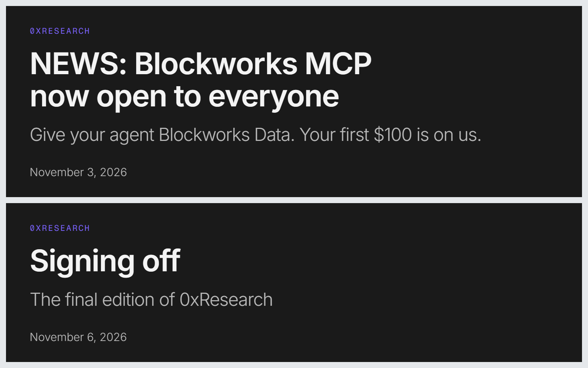
An hour of research in one prompt
On November 3, Blockworks researcher Nick Carpinito said some questions had taken him an hour of pulling up dashboards and cross-checking sources. With MCP, they took a single prompt. Three days later, he posted that it was his last week at Blockworks.
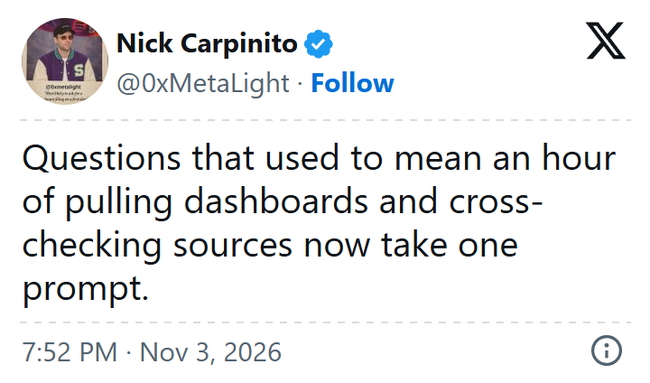
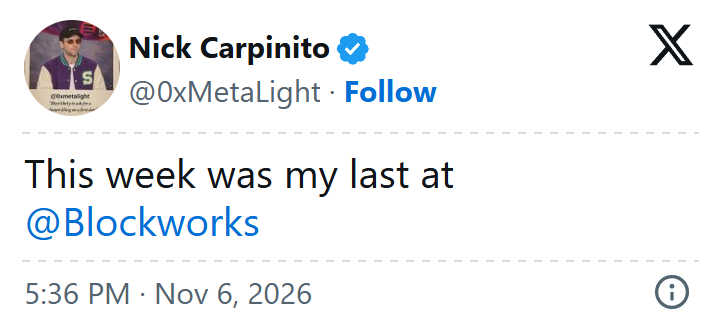
A former Blockworks employee who asked not to be named told me the API was easier for setting up automated alerts. With MCP, it was easier to pull data on the fly, and the agent sometimes ran follow-up analysis without a separate prompt.
He also said MCP helped the team spot signals sooner, post more often on X and find ideas for the newsletter and reports. It made his work a little easier without changing what was expected of him.
Who left Blockworks
I found eight public posts announcing departures between October 19 and November 7. Five of the eight were among the nine people Blockworks listed under Research in its November 2 financial disclosures. One was listed under Advisory.
| Name | Team or role | Post date |
|---|---|---|
| Nikhil Chat | Former research analyst | Oct. 19 |
| Kunal Doshi | Research | Nov. 5 |
| Westie | Data and product | Nov. 5 |
| Nick Carpinito | Research | Nov. 6 |
| Jake Koch-Gallup | Research | Nov. 6 |
| Silvio Busonero | Advisory | Nov. 6 |
| AJC | Research | Nov. 6 |
| Sam Schubert | Research | Nov. 7 |
Blockworks lists Nikhil Chat as a former research analyst. He left in October and had already announced his move to Stripe’s crypto team when the November departure posts appeared.
Another source thinks Blockworks will also close Advisory once it fulfills its existing commitments. He heard about the changes from someone involved in integrating Messari into Blockworks. Busonero’s departure post confirms that one person on that team left. I couldn’t confirm whether Blockworks plans to keep offering Advisory.
Jake Koch-Gallup joined Blockworks through its acquisition of Messari. In his departure post, he said Blockworks was prioritizing product over research.
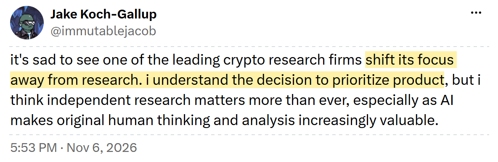
Westie helped start Blockworks’ research team, built its data team and later worked on its products. In his departure post, he said product was the company’s main focus for 2026 and beyond.

What Blockworks was already automating
In September, Blockworks gave customers of its Monitoring product the option to receive some alerts before an analyst checked them. A compliance team could get an early warning, then wait for the analyst to verify the alert and explain what happened before acting.
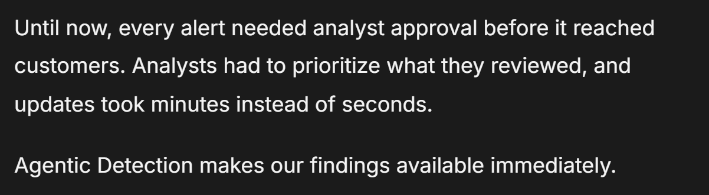
Blockworks first offered MCP to API subscribers in October, then opened it to everyone in November.
To get people to try the API and MCP, Blockworks offered $100 in credits. Co-founder Jason Yanowitz promoted the offer on X. Blockworks says that once users spend those credits, their AI assistant prompts them to schedule a call with the company about getting full access.
I signed up, tried to claim the promised $100 and got an error message.
On October 20, Carpinito said he replaced 0xResearch’s manually maintained token lists with rules that pick tokens each month. Two indices use the past 90 days of protocol revenue from the Blockworks Unified API. He used the same rules to recalculate past values.
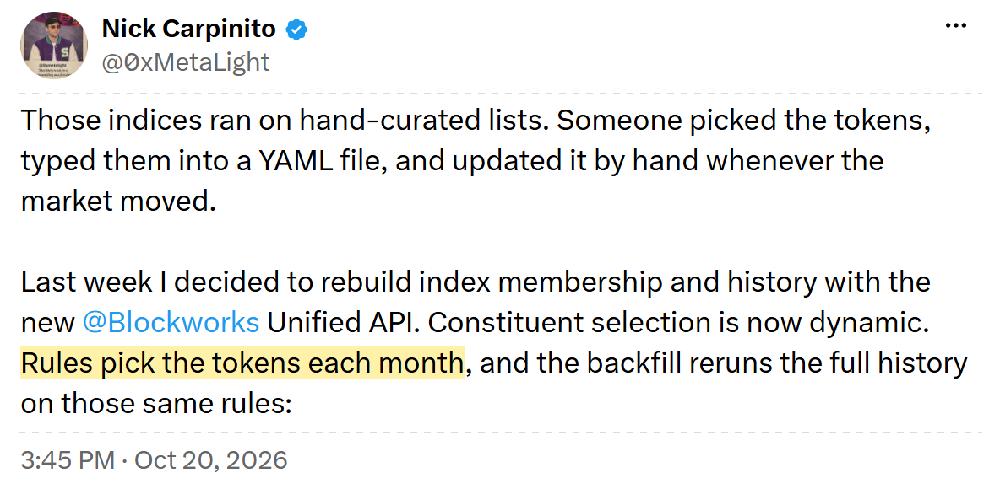
In late October, co-founder Jason Yanowitz posted a thread on X about the reported Binance hack and said Claude wrote it entirely using Blockworks MCP.
When it introduced Intel, Blockworks said it expected AI agents to handle much of the first pass when investors research a crypto asset.
Blockworks expects to add at least ten salespeople in 2027
On November 7, Blockworks’ job feed showed three listings in sales, two in engineering and one in product.
Both engineering listings were already on the board in May. The other four carry more recent dates:
- August: Account Executive.
- September: Senior Product Manager and Business Development Representative. The latter ad covers two hires to start an outbound sales team.
- October 22: VP of Sales.
In its sales VP listing, Blockworks says it expects to add “double digit sellers” in 2027. The VP would report to Jason Yanowitz and help recruit the next group of account executives.
Seven of the eight public departure announcements came after that listing, in November.
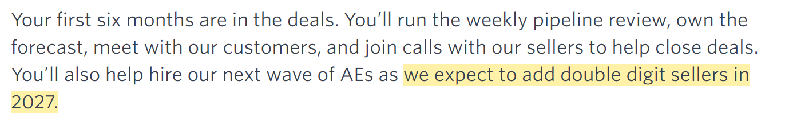
See the November 7 job board snapshot
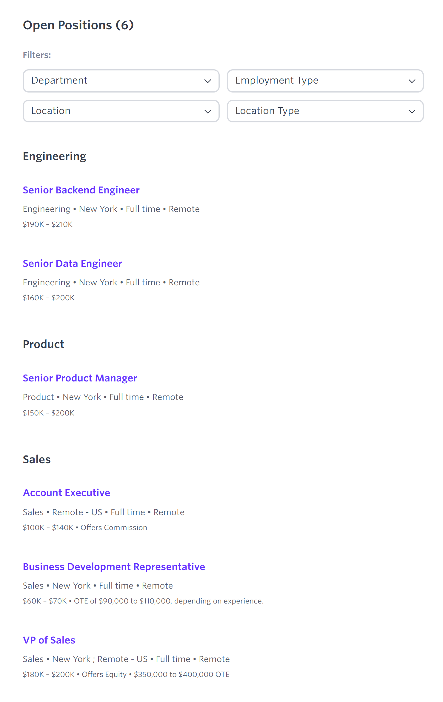
How I checked the listing dates
I matched the May and November listings by ID. The snapshots only show what was posted on those two dates. The feed records the latest publication date for each ad.
- Built In: Same six titles. It dated the two engineering ads to August; the company’s feed dated them to February.
- CryptoJobsList: Two copies of the backend engineer ad, dated September 26 and November 7, with the same responsibilities and pay.
- Web3.career: A research analyst ad was still visible from November 2025. It did not appear on the company’s current board.
The job descriptions show how the work fits together:
A product manager talks to exchanges and institutional investors to figure out what to build for them.
A data engineer brings in data from blockchain nodes and outside sources.
An account executive can sell data, API access, monitoring and disclosure tools in a single deal.
See the three job descriptions

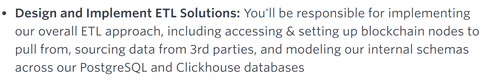

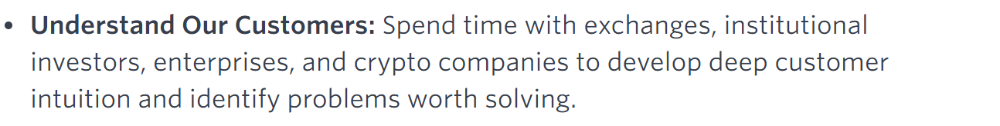

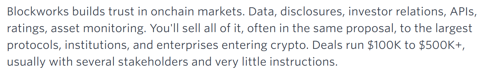
The newsroom closed a year earlier
When Blockworks closed its newsroom in October 2025, co-founder Jason Yanowitz pointed to the rapid growth of its data business.
Former Blockworks editor Macauley Peterson told me that the company “had real editorial integrity” and kept the newsroom separate from the rest of the business. The newsroom, he said, was “a loss leader / prestige component that couldn’t survive the data pivot.”
Peterson said he and David Canellis were the only two people from the newsroom who stayed at Blockworks into the following summer. Peterson moved to Blockworks’ research team as a full-time editor, reviewing everything the team published and finding ideas for new coverage. He left in August. In September, Canellis joined MegaETH as head of brand and communications.
A similar shift toward paid data at DefiLlama and Sandmark
Before Blockworks ended 0xResearch, two other crypto publishers had made similar cuts to their news operations. DL News closed its original newsroom in May, and its commercial research team moved into DefiLlama. Sandmark ended news coverage in August and shifted to crypto options analytics.
The three now sell data in similar ways: let people explore it for free, charge for tools to analyze it, and charge more for access from a customer’s own software or AI agent.
| Platform | Free access | Paid tools | Full API and MCP |
|---|---|---|---|
| DefiLlama | Basic data, some API endpoints |
$49/mo LlamaAI, custom dashboards, exports |
$300/mo Full API and MCP |
| Sandmark | Basic options charts, five AI questions a month |
$69/mo Strategy pricing, backtests, alerts |
$700/mo Minute-level data, API and MCP |
| Blockworks | Basic dashboards, $100 in API and MCP trial credits |
$375/mo billed annually AI chat, research access, limited API |
“Contact sales” Most enterprise deals run $50k–$500k/yr, per the VP of Sales listing. |
Free charts and trial credits give readers a way to see what the data can do even without a newsletter.
Who buys the data and why
DefiLlama. LlamaAI was priced for retail, but DefiLlama founder 0xngmi said in April that almost all users were funds, analysts or researchers. They can use the data to compare protocols and test investment ideas.
Sandmark. Its Pro plan targets traders and small firms. A trading desk can price an options trade, test it against historical data and set alerts for changes in volatility.
Blockworks. Its sales listing names exchanges, banks, brokerages and asset managers as buyers of data and monitoring. An exchange can check an asset before listing it and monitor it afterward. Issuers buy tools to manage disclosures. Blockworks says most deals land between $50,000 and $500,000 a year.
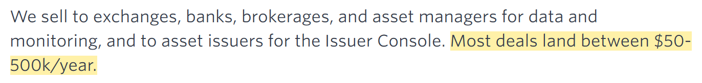
For the Account Executive role, Blockworks describes deals from $100,000 to $500,000+, often with several products in one proposal.
| Platform | User | How they use it |
|---|---|---|
| DefiLlama | BlockApex | Built a stablecoin yield aggregator. Its December 2025 writeup lists $300 a month for the Pro API as an operating cost. |
| DefiLlama | Rei Network | Built its own beta MCP server on the Pro API so its agents can query TVL, stablecoins and yields. The code requires a Pro API key. |
| Blockworks | Solana Foundation | Uses the Data API to feed stablecoin transfers, DEX volumes and lending data into its public network dashboard. |
| Blockworks | Stabledash | Reported regular MCP use in October and announced a data partnership in November to bring prices, volumes and supply data into its live shows. Payment terms are undisclosed. |
| Blockworks | Unnamed customers | In its API announcement, Blockworks says an exchange added protocol revenue and lending rates to its asset pages, a bank fed news and disclosures into its risk dashboard, and a fund fed market data into its own research agent. |
DefiLlama’s hosted MCP draws on the same credits as its paid API plan. I found no named customers who publicly confirmed paying for that hosted server or for Blockworks’ API or MCP.
A quick search turned up a few other ways people use these platforms’ data and research tools:
GEODNET uses Blockworks data for investor reporting. Jito has a Blockworks portal for token holders. Spark uses a DefiLlama dashboard to publish projected revenue, expenses and buybacks.
Arbitrum DAO reported spending $94,200 on commissioned DefiLlama research in 2025. A user who goes by Poopman said they subscribed to LlamaAI for onchain and X research, charts and CSV exports.
Decrypt puts trading next to the news
Among crypto outlets cutting newsroom jobs, Decrypt is taking a different path. In July, managing editor Andrew Hayward said he had been laid off along with most of the editorial team.
Many regular bylines faded over the summer. Decrypt Agent began publishing articles on March 10. I counted 625 of its stories through October 29.
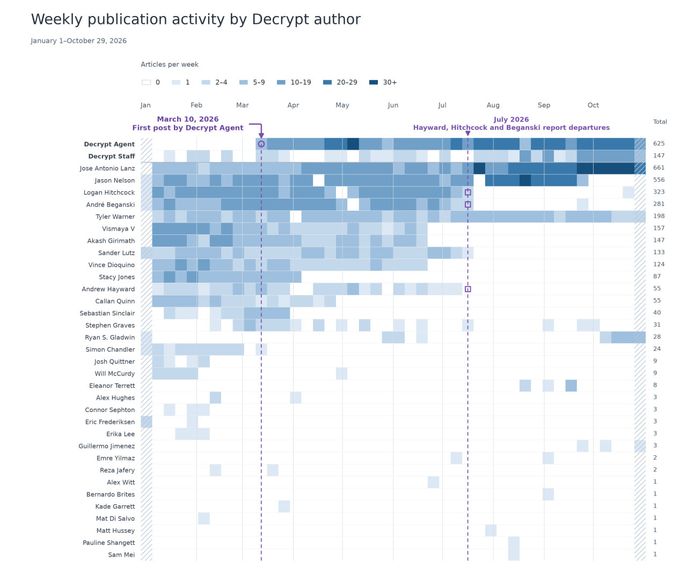
On Decrypt’s Bitcoin page, a reader can see the odds of a new high on Myriad, the prediction market run by Decrypt’s parent Dastan. Readers can also buy assets through Jupiter from Decrypt’s price pages. Decrypt launched a wallet on Solana in October so readers can use one balance across those products. It still publishes sponsored coverage, and Myriad already charges trading fees.
In its September announcement, Decrypt cited more than $600 million in cumulative Myriad trading volume. As of November 7, DefiLlama counted about $1,100 in fees and $24 in protocol revenue over 30 days across the contracts it tracks. I couldn’t quickly find out how much Dastan earns overall or how much Decrypt gets from Jupiter swaps.
What data is worth building a product around?
Blockworks, DefiLlama and Sandmark show how companies can sell data that customers can query from their own AI tools. The market for specialized data already extends well beyond crypto. A small team could build a product around a single dataset in a field it knows well.
But standardizing data and keeping it current can take more work than you might expect. For example, Delphi ran into that problem trying to turn the data it had collected into a product and decided against putting more resources into the project.
What data will customers pay for, and how much work are you willing to put into keeping it reliable? There could be a good business in finding that balance.